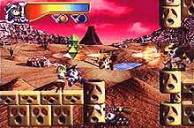

|


Review
Game Type: 2D Platform
Gunstar Heroes without the guns. Marina, our android heroine, can use her
superhuman strength to lift enemies off of their feet, grab bullets out of the
air, rip flowers out of the ground - er - anyway... Whatever she picks up she
can toss at other enemies. She can also dash along the ground and in any direction
while airborne.
Gameplay: 80/100
Overall pretty decent, but not as addictive as I'd been hoping (considering that
developer Treasure also did Gunstar Heroes). I wanted pure baddie-blasting action,
but in most stages I got tests of my precision jumping skills. Yawn. You'll have to
attempt the trickier levels a gazillion times, and apparently the designers expected this
because even if you fall in a pit you start back a short ways with only a bit off your HP
bar. After repeating the same stage ten times in one life I got positively bored. Still,
the control is fairly good (it uses only the digital pad), Marina's moves are cool, and
those sections that do have some action are a lot of fun.
Graphics: 90/100
The Genesis is hardly a graphics powerhouse, but you saw what Gunstar did for it. Now
imagine what Treasure might do with the N64 at their disposal. The bosses are absolutely
amazing, beautifully animated, and often quite large. I don't know what prompted
them to antialias 2D graphics, but the effect sure is cool. My only complaint is that almost
every object in the main levels is constructed out of building blocks straight out of
Van Gogh's worst nightmares. Too wierd. Despite being rendered the characters don't look too
bad, which is surprising since they're all done in the anime style.
Sound: 50/100
The dubbing on the voice samples isn't too bad, but each sample is used way too much and
in places it probably shouldn't be. (Does she ever stop saying "Stop!"?) That gripe aside
the audio is decent, with good-quality sound effects and okay music.
Overall: 80/100
Don't even think about buying it; you'll have it beat within the first couple days. MM is
way too short. The need to seek out a hidden crystal in each level adds some replay
value, but not much. You absolutely, positively gotta rent it, though, if only for the
graphics. You'll start gibbering when you see that first boss.
|